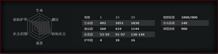

她 圣堂刺客
拉娜娅
一.背景故事
拉娜娅，圣堂刺客，一直行走在对万物的探求之路上。她有一颗渴求知识的心，早年就非常专注于研究自然法则——对魔法和炼金术有关的书非常入迷，试图重现她在紫罗兰档案馆找到的吉光片羽中记载的实验，并且背下了档案保管者对实验的观察记录。由于她天性安静且诡秘，再加上获得这些东西的高难度，拉娜娅的隐秘行动技巧得到了进一步的强化。假如她稍微不低调一点，她就可能成为盗贼公会里面人人敬仰的盗贼大师了。不过她的研究一步步的将她带进了更为诡异的死角。就在她将自己的隐秘天赋完全奉献给探索宇宙秘密的时候，却无意中打开了另外一扇门：隐之圣堂的入口。入口另一边的智慧生命早已在等着她了，他们告诉了拉娜娅许多他们发现的秘密，然而当他们告诉拉娜娅她可以为圣堂服务时，这些秘密都算不得什么了。她立誓守护这些秘密，然而更重要的是，为圣堂服务能够满足她那对知识无尽的渴求。在她杀死的敌人的眼中，她逐渐看到了一直在追寻的秘密。
二．英雄基础属性
生命：492
魔法：260
护甲：4
攻击力：53-59
移动速度：305
视野范围：1800/800
攻击距离：140
弹道速度：900
攻击前摇/后摇：0.3+0.5
施法前摇/后摇：0.3+0.51
基础攻击间隔：1.7
英雄成长性如下图：

三. 英雄技能介绍与分析
1技能:折光
巧妙地使用她的灵能面纱，圣堂刺客变得十分难以捉摸，闪避攻击的同时获得一定次数的伤害加成。这些效果加成是独立并且有一定使用次数的。
技能：无目标
伤害类型：物理?
折光次数: 3 / 4 / 5 / 6
额外伤害：20 / 40 / 60 / 80
持续时间：17 / 17 / 17 / 17
魔法消耗：100
冷却时间： 17
技能细节：①生命移除类伤害无将无视折光（也不会减少折光的次数）。②只有5点以上的伤害才会触发折光
『技能分析及注意事项』
折光是圣堂刺客保命，越塔，抵挡伤害，增加攻击力的强力技能。需要注意虽然折光效果很强，但是折光的弊处也非常明显，特别是在跟女王这类英雄对线时，女万毒镖的持续伤害是非常容易破除折光的，还有像炼金术士的酸性喷雾等等技能，都是非常克制折光效果的。因此在于这些英雄对线时需要留心折光的开启时机。
2技能: 隐匿
圣堂刺客将自己隐藏起来，在静止不动的时候处于隐身。下一次攻击降低敌人的护甲，获得伤害加成。
技能： 无目标
影响： 物理?
额外伤害：50 / 100 / 150 / 200
护甲削弱：2 / 4 / 6 / 8
魔法消耗： 50/50/50/5
冷却时间： 7
技能细节：①除了停在原地外，所有动作都会打破隐匿。②对防御塔无效
『技能分析及注意事项』
圣堂刺客的超高伤害技能，其效果不仅可以打出大量伤害，还可以降低对方护甲。需要注意的是隐匿的时候，是在原地隐匿，因此敌方是可以获悉你的位置，从而使用aoe技能进行伤害。或者直接使用显影粉尘因此使用隐匿的时机需要把握，不能长时间停留在原地。
3技能: 灵能之刃
圣堂刺客的灵能之刃能锋利的穿梭于敌人之间，对敌人正后方的敌人造成溅射伤害，同时提高攻击距离。
技能：被动
伤害类型：纯粹?
攻击距离提升: 60 / 120 / 180 / 240
技能细节：①溅射伤害可以伤害隐形单位②攻击特效和重击只对主目标有效。③对幻象的攻击不会溅射。
『技能分析及注意事项』
灵能之刃可以让圣堂刺客从一个近战型刺客摇身一变，成为一名远程型的刺客。并且其可以对正后方的敌人造成溅射伤害，注意是正后方的敌人。必须是出于一条直线上，同时溅射的效果可以通过攻击己方小兵触发。
4技能: 灵能陷阱
圣堂刺客将一个隐形的神秘陷阱放下以监视敌人的动向，当她启动陷阱时，区域内敌人的移动速度将每秒被降低5%，最多减速50%。
技能：点目标?
最大陷阱数: 5 / 8 / 11
魔法消耗：15/15/15
冷却时间：11/9/7
技能细节：①陷阱没有时间限制。②放置后2秒逐渐进入隐身，对魔法免疫，拥有100点生命值。③陷阱的视野是400/400，不能阻止中立生物刷新。
『技能分析及注意事项』
圣堂刺客的灵能陷阱不仅仅可以用来gank时减速对方。更重要的作用是用来控符，因此在6级时可以立马去河道上放上灵能陷阱。灵能陷阱的耗魔很低，因此不要灵犀，在一些关键的路口放置上一个灵能陷阱，很有可能在关键时刻能为你提供视野，或者在追杀的时候能够减速对方。
四.圣堂刺客的英雄定位
圣堂刺客在队伍中的定位是伪核，ganker，强力输出者。需要玩家经常去线上进行游走，带动场上整体的节奏。在队友的配合下，击杀对方，圣堂刺客本身没有硬控技能，因此很需要己方队友的控制技能。圣堂刺客拥有非常强的控符能力，因此当吃到双倍伤害符或者急速符，果断去线上gank。
五．圣堂刺客加点及出装
圣堂刺客主折光可以拥有更好的补兵能力以及对线能力，能够在线上给予对方很大的压力。配合隐匿一击可以很轻松的将对方打残回家。
圣堂刺客出门装推荐：
(1). 随机选择，金钱825
树枝*3(53x3)+树之祭祀(125)+动物信使（150）=434
(2). 随机选择后交换，金钱725
树枝*3(53x3)+树之祭祀(125)+动物信使（150）=434
(3). 手动选择，金钱625
树枝*3(53x3)+树之祭祀(125)+动物信使（150）=434
(4). 重新选择，金钱475
树枝*3(53x3)+树之祭祀(125)+动物信使（150）=434
圣堂刺客前中期装备选择：
圣堂刺客在中路需要第一件出魔瓶这也是为什么出门装只带树枝和树之祭祀，这样可以更快的做出魔瓶，接着是相位鞋提高攻击力和机动力，在这期间可以把大魔棒顺带做出来。接着是韧鼓或者是跳刀，有了跳刀的圣堂刺客可以在小秀一下操作，配合隐匿的重击，以及强力的追杀能力，是顺风局的利器。接着黯灭，非常强力的输出装备。
圣堂刺客后期出装推荐：
到了后期圣堂刺客需要出的第一件装备可以是黑皇杖，毕竟圣堂刺客本身皮薄血少，哪怕是有折光都很难在战场上很好的存活，因此就需要bkb以免被控住，导致无法进行输出。最后是蝴蝶或者是分身斧。
六. 圣堂刺客小贴士：
1.圣堂刺客需要去线上带节奏，这就需要队友的帮助圣堂刺客将人留下，或者控制住。
2.作为中单的圣堂刺客，需随身带TP，方便去线上进行支援。
3.圣堂刺客与食人魔魔法师以及斯温这类有硬控技能的英雄能进行非常好的配合。
4.当圣堂刺客碰到斯拉达，斯拉达的点灯会让圣堂刺客的隐匿只能作为伤害技能，而没有隐身能力，并且斯拉达有着非常强的追杀和控制能力，这是非常让人头疼的一件事情。